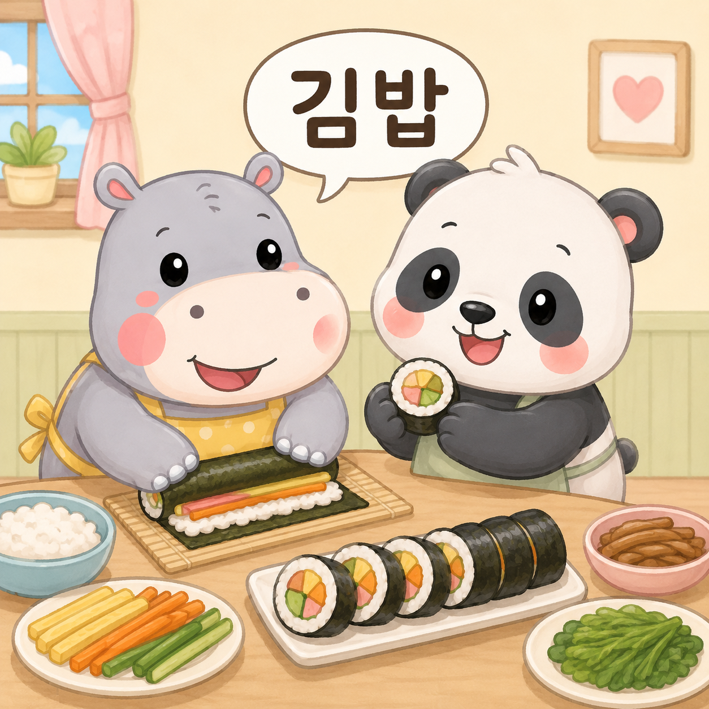
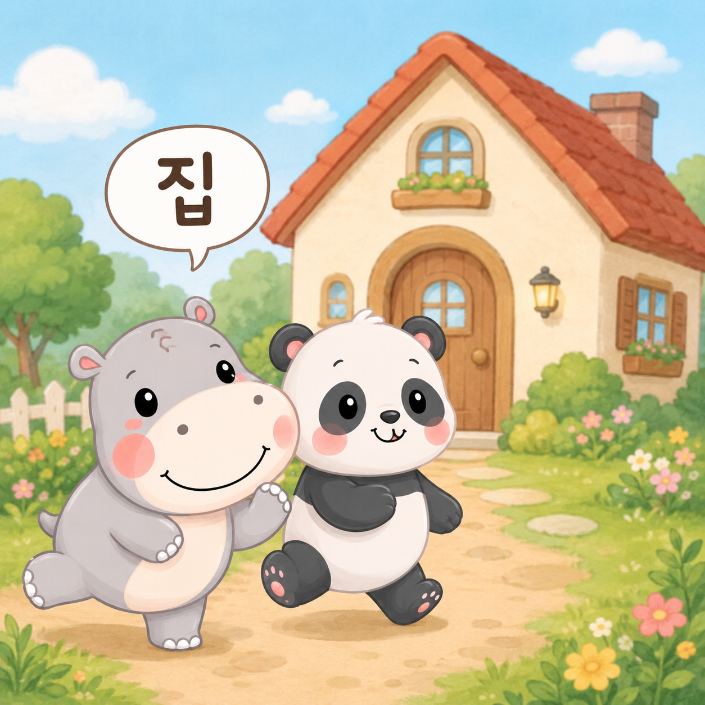
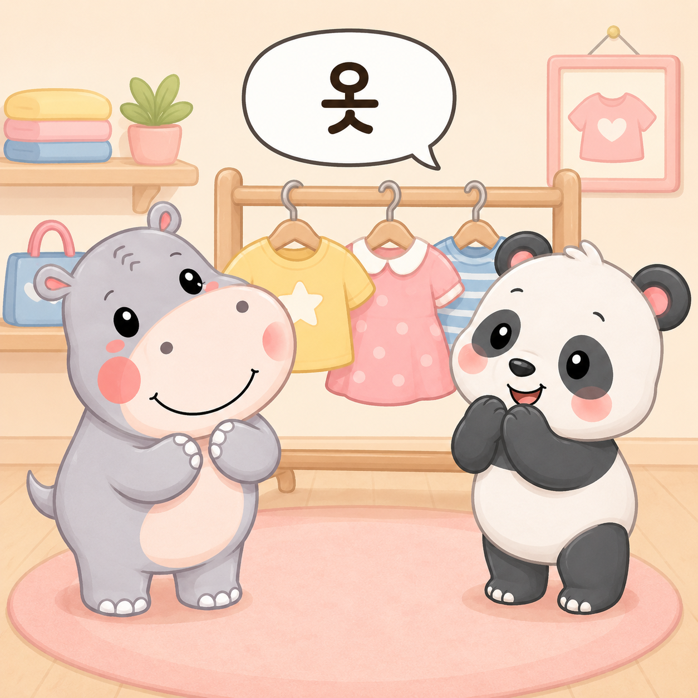
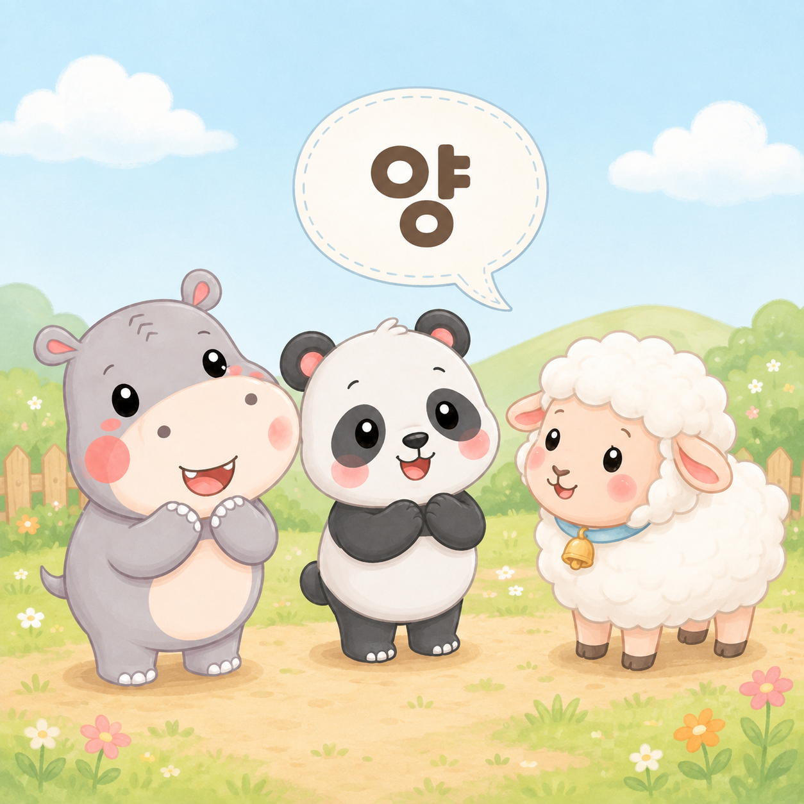
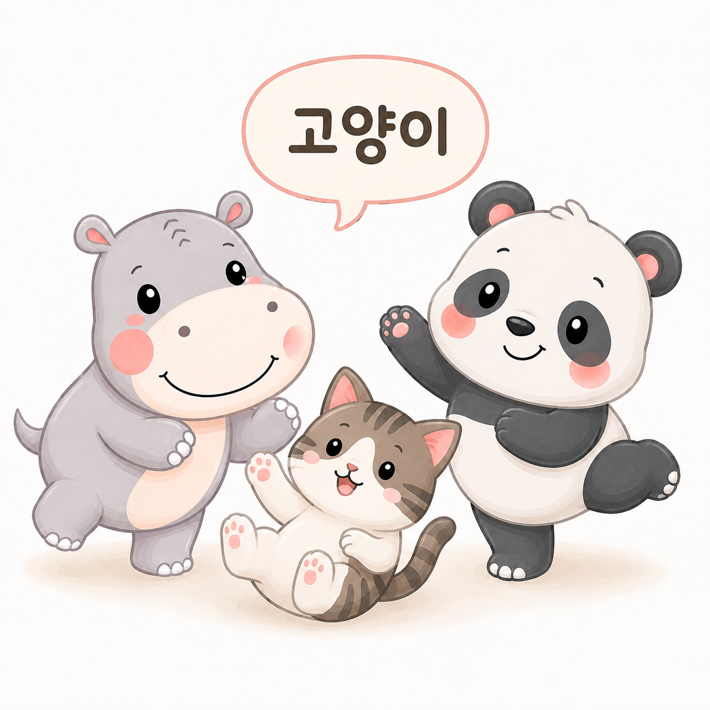
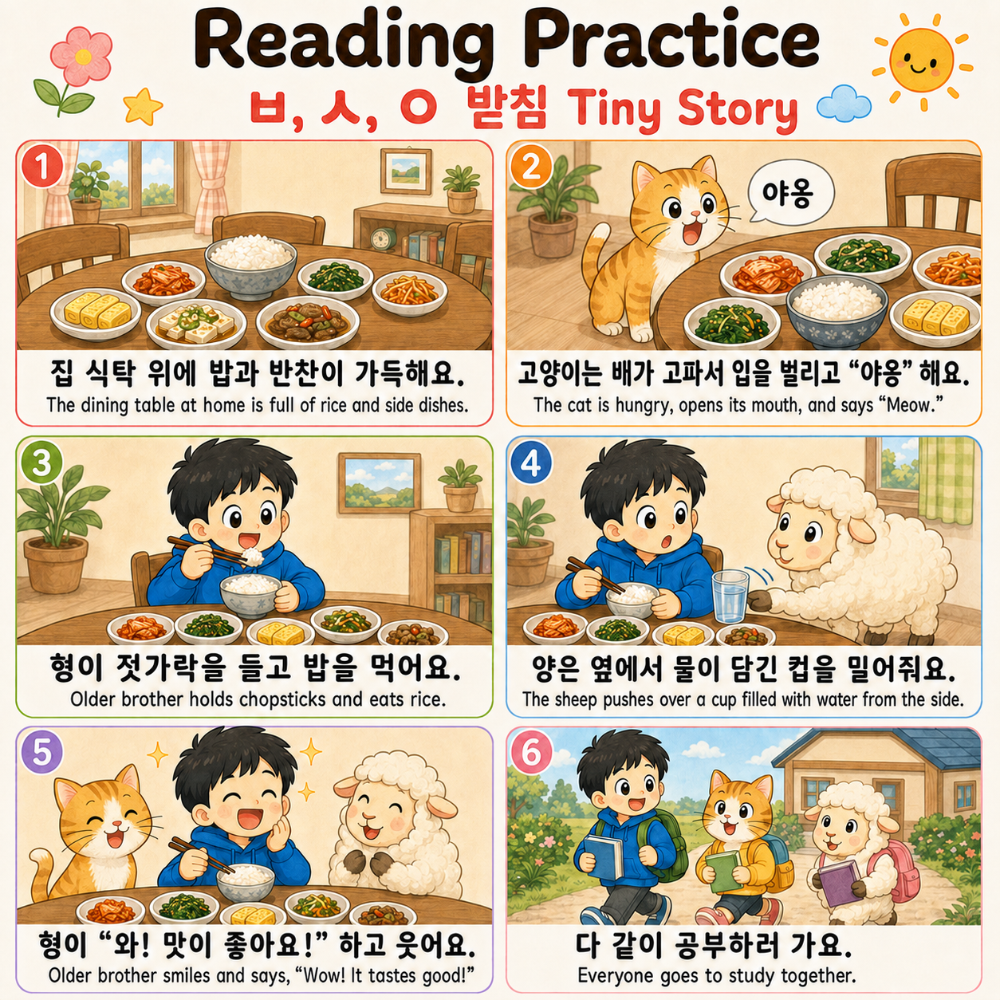

In this lesson, we will keep learning 받침. A 받침 is the final consonant added at the bottom of a Korean syllable. Today we will practice words with ㅂ 받침, ㅅ 받침, and ㅇ 받침.
When ㅂ is at the bottom, it is called ㅂ 받침. It has a short, closed p ending sound.
When ㅅ is at the bottom, it is called ㅅ 받침. It is pronounced with a short, closed t ending sound.
When ㅇ is at the bottom, it is called ㅇ 받침. It has an ng ending sound.
Look at these syllables with 받침: 밥, 집, 옷, 젓, 양.
A 받침 sits at the bottom of the syllable. These words use ㅂ 받침, ㅅ 받침, and ㅇ 받침.
바 + ㅂ = 밥
지 + ㅂ = 집
오 + ㅅ = 옷
저 + ㅅ = 젓
야 + ㅇ = 양
젓 + 가락 = 젓가락
고 + 양 + 이 = 고양이
밥 · 집 · 옷 · 젓가락 · 양 · 고양이
밥 and 집 contain ㅂ 받침. 옷 and the first syllable of 젓가락 contain ㅅ 받침. 양 and the middle syllable of 고양이 contain ㅇ 받침.
Look at each picture card and read the 받침 word.





Read this tiny story using ㅂ, ㅅ, and ㅇ 받침 words.

Choose the words you want to practice.